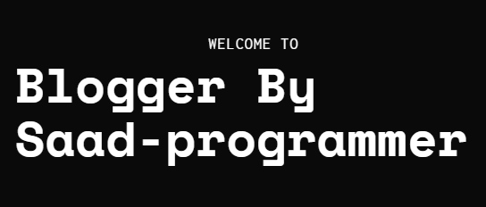
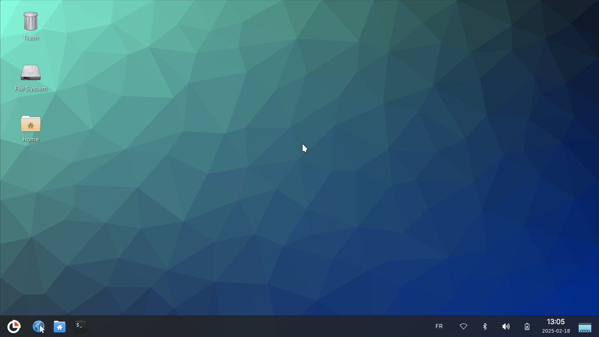
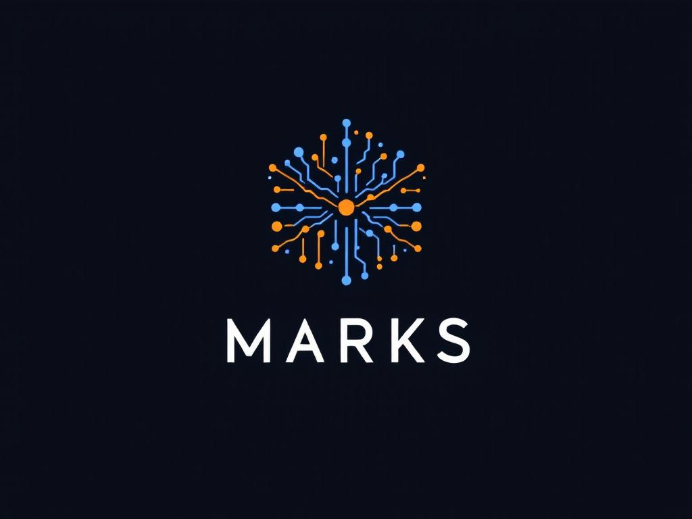

01 / WEBFULL-STACK WEB APPLICATION
S-Blogger
A blog platform with post publishing, user authentication, comments, and likes.
SOFTWARE ENGINEERING · YEAR 02
Second-year software engineering student, curious about how useful ideas become thoughtful software.
I’m Saad, a second-year software engineering student who enjoys exploring ideas across the stack, from useful web experiences to the systems underneath them.
I learn by building: shaping an idea, working through the details, and making something real that other people can use.
More on GitHubDifferent problems, different layers of the stack.

01 / WEBFULL-STACK WEB APPLICATION
A blog platform with post publishing, user authentication, comments, and likes.

02 / SYSTEMSLINUX-BASED OPERATING SYSTEM
A student-built Linux system with editions for learning, development, and everyday use.

03 / DESKTOPVOICE & TEXT DESKTOP ASSISTANT
A Windows assistant with voice interaction and a modular set of everyday commands.
CLUB WEBSITE
A club platform for sharing events and articles, with authentication and content management.
Python, JavaScript, PHP, C, C++, Java, C#
React, Node.js, Express, Django, Flask, MySQL, MongoDB
Linux, Bash, Git, .NET